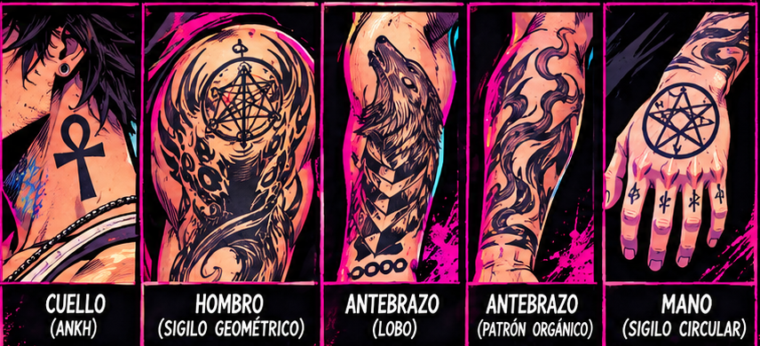

DEADBEAT DISCO · IDLE DEL PROTAGONISTA
PAUSA
ANTERIOR
1 / 4
SIGUIENTE
VELOCIDAD
¼× ½× 1× 2×
− — +
AJUSTAR
TAMAÑO DE JUEGO
FONDO
TRANSPARENTE OSCURO CLARO MAGENTA
RESPIRACIÓN
SIN COMBATE REFUGIO
PAPEL CEBOLLA
REFLEJO
ACTUAL JUNTO A CORREGIDO
LÁMINA Y TATUAJES
SPRITE ANTIGUO
GUÍAS
IDLE_4F_EXPERIMENT_FAILED_TATTOO_CONTINUITY · Experimento archivado. Fallido por inconsistencia de los tatuajes entre fotogramas. No es una animación aprobada.
IDLE_1F_FIDELIDAD · Corrección de fidelidad pendiente de validación visual. No registrada en el juego. La versión actual se conserva sin cambios.
TATUAJES AMPLIADOS ×5 · BRAZO DEL FOTOGRAMA
Recorte de los dos PNG de 288 × 512 tal como están, ampliado cinco veces.
ACTUAL · pm_idle_00 CORREGIDO · pm_idle_fid_00 LÁMINA MAESTRA · PERFIL D.
LÁMINA MAESTRA · DETALLE DE TATUAJES (CANON)
Recorte de la lámina aprobada. Es la referencia; el fotograma se compara con ella, no al revés.

Fotograma: —
Archivo: —
Lienzo: —
Figura: —
Recurso: —
Tiempo por fotograma: —
Respiración: —
Ciclo: —
Anclas: —
Dibujo: —
Estado: cargando
Pinta DD_WORLD.drawProtagonist de src/dd_world_renderer.js , sin modificar. El renderizador solo conoce el identificador player_idle_00 : este visor le entrega en ese hueco el fotograma en curso. La respiración es la fórmula del motor (seno a 2,8 rad/s sobre pAnim.bobY ), que desplaza la figura entera, pies incluidos. En el experimento 4F, el cambio de fotograma por tiempo lo hace el visor; el juego no reproduce secuencias. · Espacio: pausa · flechas izquierda y derecha: fotograma (solo 4F) · + −: tamaño · A: ajustar · J: juego · C: cebolla (solo 4F) · R: reflejo · G: guías